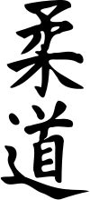

Le Judo est défini comme étant une pédagogie physique, morale et mentale par son fondateur, Jigoro Kano (1860-1938), en 1882. Il est catégorisé comme un art martial moderne qui a évolué en sport de combat et en sport Olympique.
Judo est composé de deux Kanjis (caractère japonais) signifiant : souplesse, adaptation (Ju) et voie, principe (do).
Littéralement cela signifierait : Voie de souplesse ou principe de l’adaptation.
Le souhait de Jigoro Kano était de populariser une méthode visant à mieux utiliser ses ressources physiques et mentales. La légende raconte qu’il se serait inspiré du spectacle des arbres couverts de neige lors d’hiver rigoureux : en effet, les branches du cerisier réagissaient bien différemment des roseaux. En réalité cette légende remontrait davantage au temps de la création du ju-jitsu donc bien avant le judo. Toujours est-il que la notion de souplesse viendrait de là.
Quoi qu’il en soit, Jigoro Kano avait conscience que le ju-jitsu, tel qu’il était pratiqué n’était plus adapté à l’époque moderne. Les techniques étaient parfois très dangereuses à apprendre et la plupart des maîtres n’étaient pas très pédagogues ou enseignaient un ju-jitsu décadent et inefficace.

Ainsi, en s’inspirant des méthodes de différentes gymnastiques occidentales, Jigoro Kano décida d’épurer du jujitsu les mouvements dangereux et de codifier les techniques restantes afin de faciliter l’enseignement sous formes de kata. Le judo était né.
Le judo connut un succès qui s’étendit largement au-delà des frontières japonaises et contribua largement à populariser les arts martiaux japonais, tout en entraînant la confusion entre art martial et sport de combat. Ainsi, le judo des origines s’orienta de plus en plus vers l’aspect sportif lorsque les champions du Kodokan (premiers élèves) eurent définitivement battu la plupart des écoles de ju-jitsu au cours des combats organisés. Le pouvoir économique du Kodokan était ainsi définitivement installé dans le monde des arts martiaux japonais.
Dans le monde, le Judo est le troisième art martial le plus pratiqué derrière le karaté et le taekwondo avec 8 millions de pratiquants.
Au judo, les valeurs morales sont plus importantes que la technique elle-même. C’est un mode de vie. Tout en développant des qualités physiques, il met aussi en valeur des qualités psychologiques et sociales. Ces valeurs inculquent au Judoka l’accueil positif des obstacles et défis qui se présentent à lui tout au long de sa vie.
Le salut est de rigueur à chaque accès et sortie du TATAMI. Le Judoka a le devoir de saluer son professeur, d’abord à genoux puis debout, avant le cours et à la fin du cours. Les saluts sont les marques la plus visibles du respect qui régit le judo. Ce salut signifie la dignité et la paix intérieure avant comme après le combat. Il annonce aussi le respect des règles ainsi que la droiture et la sincérité. Le judoka devrait saluer lentement, gravement et faire en sorte de montrer le respect à celui qu’il salue. Il en existe plusieurs :
Les pratiquants du Judo sont des judokas. Ces derniers portent pour leurs pratiques des JUDOGI appelés couramment de nos jours, Kimono . La tenue est généralement blanche mais elle peut aussi être bleue. Elle est particulièrement en vigueur lors des compétitions afin de distinguer les combattants.
La veste du judogi est tissée d’un coton assez épais et solide contrairement au pantalon. Le judogi doit toujours être propre et soigné. La veste est tenue par une ceinture dont la couleur désigne le grade du judoka.
La technique de noeud pour une bonne tenue de la veste s’acquière au fil des pratiques. Les hommes sont torse nu sous leur veste alors que les femmes portent un tee-shirt blanc.
Le Judo se pratique pieds nus. En dehors du tatami, une paire de sandales japonaises, les ZOORI est généralement utilisée. Cet élément n’est cependant pas du tout obligatoire : une sandale quelconque est suffisante actuellement.
Jusqu’à la ceinture marron incluse, le passage de passage de grade se déroule en général à la fin de la saison avec son professeur. Le Judoka doit démontrer sa maîtrise de techniques enseignées durant la saison sportive. Ces techniques sont à effectuer avec un partenaire : Tori, celui qui saisit, et Uke celui qui « reçoit » l’action de son partenaire.
Les ceintures de couleurs ont été inventées en Angleterre au milieu des années 1920 puis introduites en France par le professeur Mikinosuke Kawaishi. On trouve dans l’ordre les ceintures : blanche, jaune, orange, verte, bleue, marron (la ceinture violette a été retirée depuis la mise en place des ceintures bicolores : blanche-jaune, jaune-orange, orange-verte, verte-bleue) ; la ceinture verte-bleue a été abandonnée lors du passage de l’âge requis de 16 ans à 15 ans pour l’obtention du 1er dan) et la fameuse ceinture noire ainsi que deux ceintures supérieures : une rouge et blanche du 6e au 8e dan, une rouge pour 9e et 10e dan Symboliquement donné à Jigoro Kano, le fondateur du judo, après sa mort.
Une ceinture particulière, la ceinture blanche large, couleur des débutants, pour signifier que l’on n’a jamais tout appris. Il existe aussi des grades alternatifs pour évaluer et récompenser les plus jeunes (blanche-jaune, jaune-orange, orange-verte), on trouve aussi, dans la catégorie éveil-judo, les ceintures blanches à 1 ou 2 « lisérés » horizontaux. Il se peut aussi d’avoir des barrettes à la place d’une ceinture blanche-jaune. Ce qui donne une ceinture blanche avec une barrette jaune à coudre, ainsi de suite jusque parfois trois barrettes (en Belgique).
| Grade | Nom | Couleur | Répresentation |
|---|---|---|---|
| 9 kyu | Ku-kyu | Blanche | |
| 8 kyu | Hachi-kyu | Blanche-jaune | |
| 7 kyu | Sichi-kyu | Jaune | |
| 6 kyu | Roku-kyu | Jaune-orange | |
| 5 kyu | Go-kyu | Orange | |
| 4 kyu | Shi-kyu | Verte-orange | |
| 3 kyu | San-kyu | Verte | |
| 2 kyu | Ni-kyu | Bleue | |
| 1 kyu | Ichi-kyu | Marron |